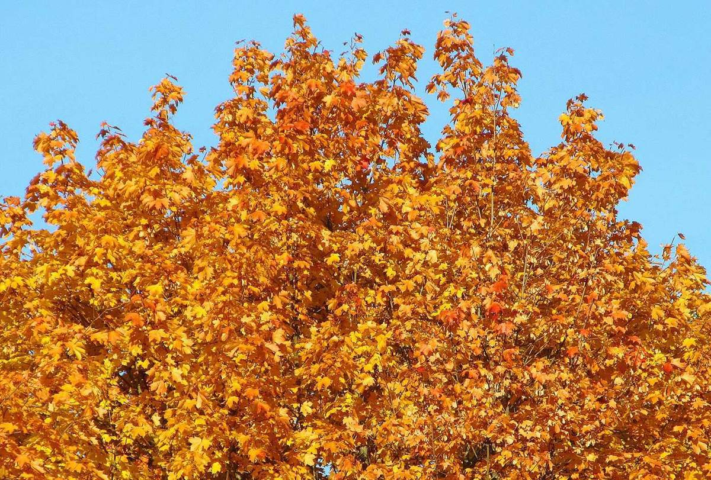
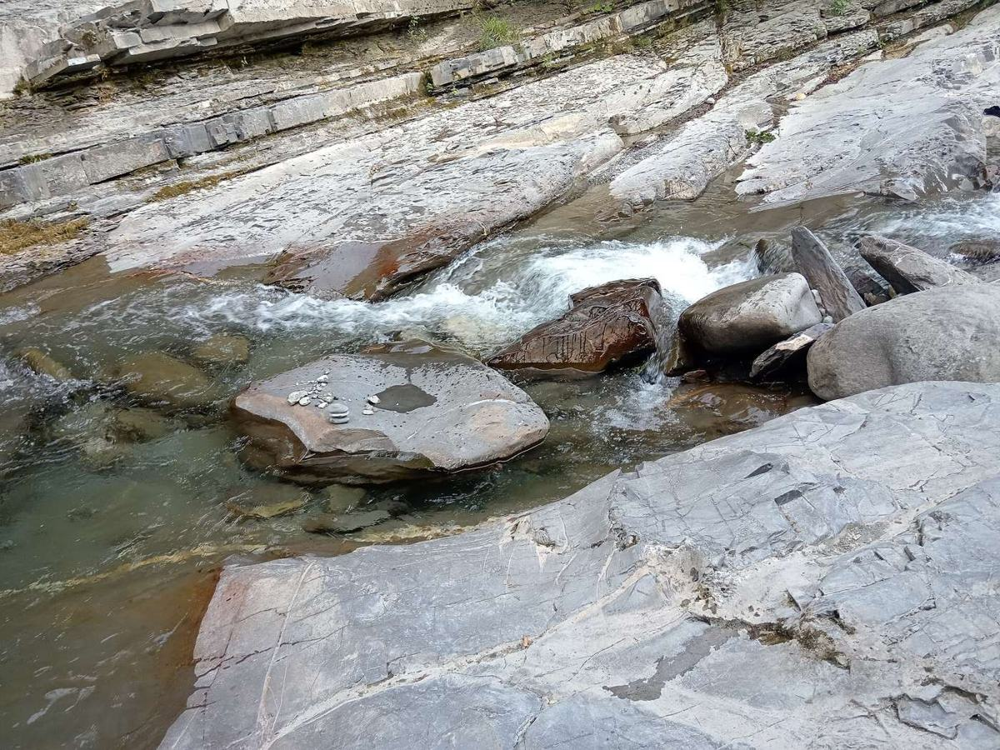
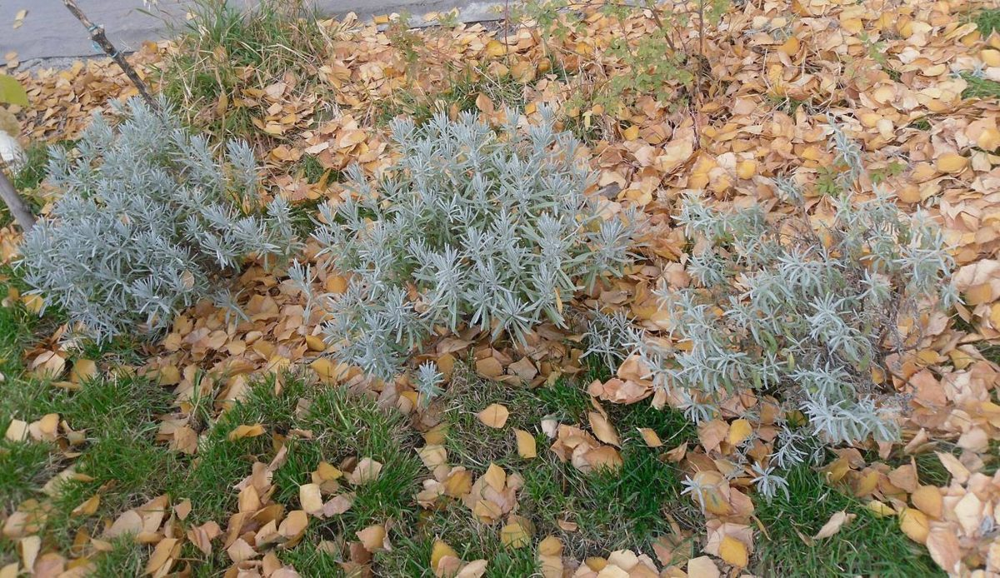

制作側の連想
荷物はかりを、配置図にしてみる
このサイトは、旅の荷物を吊るして量る小さなはかりを一本、縦に吊るして図にしたつもりで作りました。六つの部位に番号をふり、上の図と並べています。制作側の連想で、お店の理念・由来とは無関係です。実際の製品の仕様を示すものでもありません。
凡例
六つの部位
- 1持ち手ベルトいちばん上の、手でつかむ輪の部分。図では黄色の芯を通した輪にしています。
- 2液晶表示窓本体の上寄りにある、四角い表示の窓。図では中身を伏せて、横線だけ並べました。
- 3電源ボタン窓のすぐ下の、丸い押しボタン。図では黄色の丸に、電源の記号を重ねています。
- 4本体ケース全体を包む、ずんぐりした胴の部分。図ではいちばん面積の広い、赤みのある部分です。
- 5電池ふた胴の下のほうにある、はめ込み式の小さなふた。図では四角い枠に、ねじ二つを添えました。
- 6荷掛けフックいちばん下の、J字に曲がった金具。図では細い線で描いた弧の部分です。
ギャラリー(イメージ)
吊るして並べる、六枚の写真






写真はフリー素材のイメージです。お店のものではなく、お店で提供している商品を示すものでもありません。
ひと息(イメージ)
図のあいだに、二枚の余白

ご案内
お店のこと(確認できたものだけ)
| 所在地 | 〒606-8386 京都府京都市左京区新丸太町７５−９ |
|---|---|
| 電話 | 準備中 |
| 営業時間 | 準備中 |
| 定休日 | 準備中 |
| ご予約 | 準備中 |
| 駐車場 | 準備中 |
| SNS | Instagram @shotocafe_kyoty |